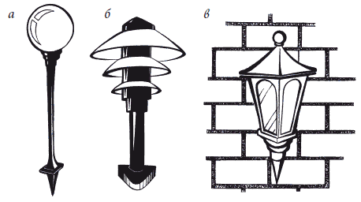

Наружное освещение.

После возведения дома, создания подъездных путей и пешеходных дорожек, возведения забора вокруг дома приступают к дальнейшему благоустройству прилегающей территории. Создавая на своем загородном участке уютные уголки, строя ажурные беседки, разбивая сад и цветник с редкими цветами, не следует забывать, что на смену дню приходит вечер, а за ним и ночь. И тогда потребуются наружное освещение и установление осветительных приборов вокруг дома.
Для красивого здания, построенного на большом участке, недостаточно одинокого фонаря, скудно освещающего сумрачный двор. Большую роль освещение играет в том случае, если хозяева хлебосолы и любят принимать гостей по вечерам. Поэтому нужно продумать, как правильно установить осветительные приборы, чтобы они выполняли свои функции, служили дополнительным украшением дома и в то же время не оказались разорительной статьей дохода.
Специалисты подразделяют наружное освещение на 2 вида: функциональное и декоративное.
1. Функциональное – повседневное освещение прилегающей территории и дорожек. Разновидностью данного вида является охранное освещение – создающее эффект присутствия и необходимое для видеонаблюдения.
Вечернее освещение дома должно подчиняться законам оптики, правилам дизайна и логике здравого смысла. По всем правилам систему освещения нужно продумать с самого начала. Проектировать и устанавливать постоянное наружное и внутреннее освещение – процесс длительный и трудоемкий, осуществляют его на стадии строительства.
2. Декоративное освещение создает в доме атмосферу уюта и настроения, игру света и тени. Включает ландшафтное, архитектурное и праздничное освещение.
Функциональное освещениеФункциональное освещение необходимо для создания безопасности, эстетики, долговечности, удобства в эксплуатации и обслуживании. Оно нужно для того, чтобы ночью было безопасно и комфортно выходить из дома, ходить и ездить по участку. В первую очередь должны быть освещены дорожки, ворота, парадный подъезд (если есть, то крыльцо, выходящее в сад или на задворки), обозначены все неровности, ступени, канавы, колодцы и т. д. Обязательно должно хорошо освещаться дорожное покрытие, чтобы передвигаться по нему было легко и безопасно.
Важно избегать раздражающего эффекта ослепления. В наши дни бороться с этой проблемой помогают светильники с эффектом отраженного света. Правильно выбранный дизайн светильников не должен нарушать композиционного решения в целом.
Обязательно следует учитывать сезонные факторы. Поскольку приборы функционального освещения используются также в зимнее время, то располагать их следует так, чтобы они находились над снежным покровом и были выполнены с достаточным уровнем защиты. Устанавливая светильники, необходимо учитывать климатические условия: в средней полосе рекомендованная высота столбиков должна составлять не менее 60 см.
Функциональное освещение может управляться с дистанционного пульта, а также из нескольких мест в доме и на участке. Для функционального освещения желательно предусмотреть экономичный режим работы, при котором могут быть включены не все светильники. В этом случае праздничное функциональное освещение сближается с декоративным.
Охранное освещениеОхранное освещение – освещение, создающее эффект присутствия, оно необходимо для видеонаблюдения и должно работать постоянно в темное время суток. Поэтому охранное освещение делается максимально независимым от индивидуальных прихотей всех проживающих в доме, а также каких-либо непредсказуемых факторов. Охранное освещение необходимо, чтобы под наблюдением был весь участок по периметру. Оно может включаться от сумеречных датчиков или реле времени, создавая эффект присутствия хозяев даже в их отсутствие. Если на участке есть система видеонаблюдения, то охранное освещение обеспечивает нормальную работу видеокамер. Работая в автономном режиме, оно не предполагает постоянного внимания со стороны хозяина дома.
Декоративное освещениеДекоративный свет призван создавать настроение. Он заставляет совершенно по-новому воспринимать дом и привычные уголки сада, которые, в зависимости от яркости, спектральных характеристик и размещения источников освещения, могут предстать торжественными, праздничными, таинственными или интимными. Он может привлечь внимание к композиционным особенностям загородного дома, например, акцентировать внимание на его симметричном построении, каменной кладке, особенностях оформления или каких-то других «изюминках» здания или прилегающего к нему саду.
Использование отдельных светильников или их групп позволяет расставить художественные приоритеты на загородном участке, высветить отдельные элементы дома, выделить отдельные участки или зоны в саду, скульптуру или малые формы, заставить светиться воду в фонтане и водопаде, привлечь внимание к красивому растению, подчеркнуть структуру кроны. А вместе с тем с помощью света можно замаскировать огрехи проектирования, недостатки природного окружения, если таковые имеются.
Декоративное освещение подразумевает игру света и тени в наиболее красивых уголках, созданных для приятного отдыха. Для этого вида освещения важно правильно подбирать оборудование и свет по спектральным характеристикам. Известно, что свет бывает теплым (так называемый желтый) и холодным (белый). Так, для вечернего освещения патио, отдельных зон отдыха, барбекю или очага следует использовать мягкий рассеянный свет в теплых тонах, который создает особую атмосферу уюта.
На небольшом участке искусная игра света помогает визуально расширить его границы. С этой целью достаточно устраивать многоплановую световую картину с использованием на заднем плане ламп с оттенками холодного цвета. Объекты, которые надо приблизить, выделяют с помощью света теплых тонов.
Продумывая световой дизайн своего участка, не стоит использовать все существующие оттенки цвета. При выборе основных и дополнительных цветов применяемых ламп и светильников желательно ограничиться лишь несколькими, которые сочетаются между собой и дополняют друг друга. И конечно, освещение должны гармонировать с цветовым дизайном дома. При этом следует помнить, что красные и коричневые светофильтры привносят в вечернюю атмосферу участка драматизм и тревогу, использование ярко-желтого света может придавать растениям болезненный вид, а пронзительно-белый свет с «ксеноновым» эффектом превращает дом и сад в застывшую безжизненную декорацию.
Декоративное ландшафтное освещение, как правило, рассчитано на работу летом. Для подсветки деревьев используют верхний свет, закрепляя светильники, лампы и фонарики непосредственно в кроне.
Однако лучше пользоваться небольшими лампами с низкой интенсивностью свечения, поскольку мощные лампы могут нанести вред дереву. Распространенный способ украшения деревьев – развешивание гирлянд с крошечными мерцающими лампочками или оплетение ими стволов и сучьев. Использование монохромного света или сочетание нюансных тонов создают удивительную картину праздничности. Для украшения сада подойдут голубоватые, лиловые, сиреневые тона, способные придать участку атмосферу волшебства.
Под искрящимся снегом не менее красив зимний сад, если для подсветки точно подобраны направленность светильников и цветность источников света. Так, если на участке растут туи и ели, освещать их следует по-разному. Голубая и обычная ели буквально серебрятся в лучах холодного света и выглядят изумительно. Однако те же самые растения значительно проигрывают, если лампы накаливания источают теплый свет. Зато туя при теплом свете заиграет и смотрится великолепно.
Архитектурная подсветка загородного домаДеление освещения на функциональное и декоративное, как правило, достаточно условное. Так, широко применяемое сейчас нижнее освещение зданий наряду с утилитарной функцией выполняет еще и декоративную, подчеркивая индивидуальный характер и стиль сооружения. В то же время архитектурная и декоративная подсветки объединяют дом, въездную зону, автостоянки, площадки для отдыха, дорожки и лестницы, позволяя в полной мере использовать загородный дом в темное время суток по его назначению.
Освещение окружения дома следует планировать еще на стадии освоения участка: сначала проложить электропроводку, затем вставить фундаментные элементы под светильники и лишь потом строить элементы малой архитектуры и укладывать покрытия. Нельзя доверять эту работу случайным людям, проводить освещение должен только профессионал.
Основное требование к архитектурной подсветке:
– используемые осветительные приборы должны минимально привлекать внимание днем, а ночью быть максимально эффективными;
– свет при этом может быть белым или цветным;
– светильники и прожекторы подбирают компактные, отвечающие архитектурному облику здания;
– по цветности и цветопередаче они должны соответствовать окраске стен, других освещаемых поверхностей и деталей.
При этом одни части или элементы здания и прилегающих участков могут быть ярко освещены падающим на них светом от прожекторов, а другие лишь обозначены светящейся линией или точкой. В этом случае идеально подходят светодиоды и оптоволокно.
В архитектурной подсветке существует несколько приемов. Самый простой – прием общего заливающего освещения. Он предполагает, что ночной образ объекта должен быть в максимальной степени подобен дневному. Более сложный – выделение световых акцентов, создание на плоскостях стен дома светового рисунка и подчеркивание оригинальных задумок архитектора – колонн, башен, пилястр.
Въездные ворота и вход в дом
Для большего покрытия площади светом здесь лучше установить торшерные светильники высотой от 2–3 м. По обе стороны въездных ворот можно расположить два источника света, лучше всего подойдут для этого в меру яркие галогеновые светильники.
Лестницы
Важно, чтобы ступени не тонули во мраке, но светильники могут быть небольшой мощности. Желательно установить невысокие или настенные светильники. Иногда лестницы освещают маломощными лампами, встроенными в ступени. Подобным образом освещают перепады высот более 10 см.
Подъезды и дорожки
Нуждаются в хорошем освещении дорожки, ведь вечером и ночью на таком неосвещенном участке можно оступиться. Для этого подойдут специальные фонари для дорожек в виде невысоких «шариков», которые направляют свет именно на дорожку или ступеньки.
Подъезды освещать очень ярко не всегда целесообразно: достаточно, если лампы будут высвечивать направление дорожки или подъезда. В этих местах также обычно устанавливают осветительные приборы на низких садовых столбиках. Оптимальная высота для них – от 50 до 100 см. Лампы желательно снабдить козырьками или растрами, направляющими свет вниз, чтобы не ослеплять проходящих людей.
Хорошо смотрятся встроенные в покрытия специальные плоские светильники, по которым можно ходить и ездить. Подойдут для этого также совсем маленькие фонарики-светлячки, которые монтируют в бордюры или непосредственно в плитку дорожек.
Беседки и террасы
Беседки и террасы освещают так же, как и помещения. Здесь устанавливают настенные светильники небольшой мощности. Обычно лампы устанавливают высоко, чтобы свет, падая сверху, рассеивал темноту.
Растения
Грамотное освещение поможет украсить различные композиции из растений и сделанные из них малые архитектурные формы. В этом случае лучше всего использовать светильники с направленным светом, с помощью которых можно высветить лучом конкретную деталь или композицию в целом. Другой вариант – спрятать светильник в самой композиции и подсвечивать ее изнутри.
Настоящей палочкой-выручалочкой для многих владельцев загородных домов должны стать фонари, работающие от солнечных батарей. Их можно воткнуть в землю в том месте, где нужно что-то сделать, или наоборот, где захочется отдохнуть. Питание фонаря осуществляется от аккумулятора типа АД, который заряжается с помощью солнечных батарей, вмонтированных на его крышке. Яркость ночного свечения фонаря напрямую зависит от уровня его освещенности в дневное время. Источниками света служат люминесцентные лампы или светодиоды белого и янтарного цвета, которые вносят разнообразие в декор участка. Подобные светильники подходят для освещения небольших композиций из деревьев и кустарников, а также цветников или дорожек.
Использование кустов нескольких пород с листвой контрастной окраски повышает декоративность группы не только в светлое время суток, но и при вечернем освещении. Они будут выглядеть по вечерам еще более живописно, если сбоку устроить подсвечивание мягким светом. Располагать его лучше со стороны самых низких растений.
Миксбордеры, которые представляют собой многоуровневые композиции, можно освещать боковым светом со стороны дорожек или с газона. Ночью на темном фоне будут четко выделяться все растения, в том числе и наиболее высокие – дельфиниумы, акониты, коровяки, волжанки и пр.
Цветники, особенно ковровые, как правило, подсвечивают сверху, поскольку плоские посадки лучше рассматривать с некоторого возвышения, с балконов или из окон. В цветнике лучше установить переносные приборы. Это позволит подсвечивать многолетники и однолетники в момент цветения. После отцветания светильники можно перенести в другое место, к другим растениям.
Постоянные осветительные приборы лучше устанавливать в тех местах, где растения красивы круглый год. Например, нужно выделить деревья и кустарники, которые имеют интересную форму кроны, декоративную расцветку листьев. Деревья и высокорослые кусты лучше освещать рефлекторами, которые устанавливают под их кронами. Низкорослые растения высотой до 1 м нужно освещать сверху. Лампы прикрывают таким образом, чтобы свет падал вниз и в стороны. Весьма интересно выглядит сад, если освещать плоский фон, на котором выделяются темные силуэты дерева или скульптуры.
Водоемы
В темное время суток необычайно эффектно выглядят подсвеченные водоемы, фонтаны и водопады. Увидев однажды мерцающий и светящийся в темноте водный сад, трудно отказаться от этой феерии. К тому же при наличии искусственных или природных водоемов правильно созданное освещение поможет обыграть изгибы ручьев, подчеркнуть линии камней, водных струй, статуй и растений.
Самый простой способ освещения – применить особый заливающий свет, однако этот прием не дает возможности подчеркнуть всю точность перепадов и свечения воды. Более интересным является освещение водоема или фонтанчика, воздвигнутого на участке, изнутри, то есть когда свет выходит из-под воды. Наружное освещение в зоне любого водоема с подсветкой должно быть минимальным. В этом случае свет в воде предстанет во всей своей красе.
Если на участке имеется искусственный прудик или любой другой водоем, то не стоит по его краям располагать несколько светильников. Он будет освещен ровным светом, но особой красоты на участке не прибавится. Гораздо интереснее будет выглядеть водоем, если некоторые уголки высветить, а другие оставить в полумраке. Эмоциональное восприятие в подсветке струй воды или водоемов дополняет использование цветных светофильтров.
Устраивая подсветку на участке, важно учесть несколько моментов:
– лучше использовать белый, желтый или зеленый свет; любители экспериментировать с палитрой светофильтров могут быть вознаграждены, создав неповторимые картины ночного сада;
– элементы освещения должны быть хорошо замаскированы, иначе они будут заметны днем;
– эффектно смотрится подводный свет, однако организация подводной подсветки требует как правильного декоративного оформления, так и выбора наиболее безопасного оборудования. В противном случае, если поместить лампы в не слишком прозрачную воду, она будет смотреться еще более мутной.
Праздничное освещениеОсобый вид декоративного освещения – праздничное. За городом приятно проводить летние праздники, справлять дни рождения и именины. Не менее интересно встречать на природе Новый год или Рождество. Пикники, семейные гулянья зачастую затягиваются до поздней ночи, и тогда приходится включать освещение. В особо торжественные моменты устраивают праздничную иллюминацию. Постоянное наружное и внутреннее освещение проектируют и устанавливают уже на стадии строительства.
Праздничная иллюминация – мероприятие разовое, происходит не так уж и часто. Она требует определенных усилий и затрат, а также разнообразия. Поэтому в наши дни некоторые фирмы предлагают особую услугу – праздничный свет напрокат. На Западе подобная услуга практикуется уже давно, однако для России это новинка.
Что собой представляет праздничное освещение? Это гибкий световой шнур «дюралайт», состоящий из прозрачной пластиковой трубки, в которую помещены лампы накаливания, оптоволокно или светодиоды. Используя подобный шнур, можно обвить и украсить гирляндами деревья и фасад здания. С его помощью легко и быстро изготавливают всевозможные фигуры и световые скульптуры – различных животных, цветочки, надписи и поздравления для виновников торжества. Под Новый год делают елочки, впряженных в сани оленей, устраивают салют. При помощи светодиодов и лампочек накаливания делаются снежинки, светящиеся сосульки, снеговики – все зависит от фантазии и цели устраиваемого праздника. Применяя светодинамики на светодиодах, их можно заставить переливаться и стрелять разноцветными огнями. Можно обрамить дюралайтом коробки с подарками.
Так называемый гибкий неон, являющийся разновидностью светового шнура, имитирует неоновый свет. Вся эта световая мишура поможет сделать праздник неповторимым, послужив дополнительным украшением к фейерверкам и прочим ярким, но кратковременным эффектам. Приобретать подобное оборудование в постоянное пользование – дело хлопотное и достаточно дорогое. Лучше взять его напрокат или в аренду, тогда отпадает необходимость хранить оборудование.
Виды светильников и фонарей перед домомОсобый уют загородному участку придают так называемые малые архитектурные формы. Это могут быть керамические сосуды, солнечные часы, небольшие садовые скульптуры. Их использование предполагает наличие художественного вкуса, поэтому следует избегать примитивного украшательства. Только в этом случае сад станет для всех домочадцев источником радости и отдохновения, местом, куда приятно приезжать всей семьей и приглашать друзей. К числу элементов декорирования наружного ландшафта относятся светильники, фонари и другие источники света. В их качестве можно использовать фонари-тумбы, настенные светильники, многоярусные абажуры, прожектор на солнечных батарейках или обычный фонарь со свечой внутри. Фонари и светильники устанавливают на высоких или низких столбах, штырях, помещают на стене дома, между деревьями развешивают лампочки или гирлянды.
Выбор дизайна и стиля осветительных приборов может быть самым разнообразным. Прежде всего, светильники и садовые фонари нужно выбирать, учитывая стиль и внешний облик дома. Главное, чтобы фонари не просто находились в саду, а подчеркивали различные элементы загородного пейзажа. Тем более что ассортимент различных светильников в настоящее время огромен, есть на чем остановить взгляд и не составит труда найти то, что нужно для оформления именно вашего дома и сада. Можно выбрать всевозможные деревянные светильники-фонарики, керамические японские фонарики различных форм, кованые парковые фонари, маленькие алюминиевые или пластиковые точечные светильники для цветников и водоемов.
В то же время при выборе светильников следует помнить о некоторых правилах. Не стоит останавливать свой выбор на одном типе фонарей – освещение в саду будет однообразным и неинтересным. Оптимальный вариант для любого наружного оформления – светильники должны быть разными по функциональности и размерам: настенные, на высоких и низких ножках, одиночные или собранные по несколько штук и др. Однако очень важно, чтобы они были подобраны в одном стиле.
Существуют и другие маленькие хитрости, о которых следует помнить, подбирая виды светильников для загородного дома и сада. Так, фонари с рассеянным светом предназначены для освещения поверхности земли и низких кустарников. Располагая их вдоль дорожки, можно обеспечить необходимую видимость и достаточное освещение предметов. Используя лампы и светильники с регулируемым световым лучом, можно добиться хорошей видимости без ослепительного блеска. Выгодно подчеркивает рельеф местности и выделяет предмет из общей композиции направленное освещение. Перекрестное освещение применять можно в том случае, если нужно показать крупные объекты и большие территории. Это легко, если разместить несколько фонарей таким образом, чтобы площадь освещения одного светильника перекрывалась светом от другого.
Там, где можно использовать холодный свет, лучшим решением для любого времени года (как для зимы, так и для лета) будут низковольтные галогеновые лампы. Светодиоды также эффективны в любую погоду, однако яркого света они не дают.
При размещении и подборе осветительных приборов не существует шаблонов, все зависит от вкусов хозяев дома, их пристрастий, моды и, конечно, финансовых возможностей. Можно остановить свой выбор на классике, хай-теке, модерне, стиле кантри или любом другом. Возможна даже эклектика, поскольку это тоже своего рода стиль, причем очень распространенный. В зависимости от стилевого направления могут быть использованы литье, ковка, пластик, природный и искусственный камень. Все зависит от вкуса и соблюдения чувства меры.
Говоря о наружном освещении зимой, следует помнить об используемых источниках света и целесообразности. Так, предназначенные для использования на улице высокоэффективные и «долгоиграющие» энергосберегающие лампы с хорошей цветопередачей эффективно работают при температурах не ниже –10 °C.
На небольшом участке нерационально использовать мощные металлогалогенные, натриевые и ртутные лампы, хотя они обладают достаточно хорошей цветопередачей и значительным сроком службы (рис. 41).

Декоративные светильники своими руками
Способ освещения как ничто другое влияет на настроение, задает стиль помещения или экстерьера, помогает расставить акценты. Но зачастую бывает трудно найти светильник, который бы вписывался как в декор сада, а тем более в настроение владельца участка. Тогда можно просто-напросто сделать оригинальные и замечательные вещички своими руками. Так, в нелегком деле декорирования садового участка может помочь обыкновенный фонарь из фотолаборатории. Из него достаточно вынуть электрический патрон, отчистить наждачной бумагой ржавчину, покрасить масляной или золотистой эмалью из аэрозольного баллончика. Отверстие в нижней части колпака можно закрыть плотным полиэтиленом, а также утяжелить основание цементным раствором или стальной шайбой. Можно подвесить фонарь на цепочке. В таком виде фонарь может украсить веранду или балкон.
Светильники «Веселые мордашки в шляпах и панамках»
Украсить террасу или беседку могут забавные светильники, сделанные своими руками. Они создадут уютную и веселую атмосферу, если вы устраиваете чаепитие, семейное торжество или непринужденную встречу в кругу друзей.
Достоинство таких светильников в том, что их легко изготовить. Смешные и веселые светящиеся «головки», созданные для проведения праздника в летний вечер и развешанные на деревьях загородного дома, совершенно преобразят сад. Важное достоинство подобных абажуров в том, что они изготовлены из небьющегося материала, поэтому можно создать целую гирлянду, развесить по всему периметру веранды или террасы, а после праздника свернуть и сохранить до следующего торжества.
Работа.Для создания веселых рожиц понадобятся бечевка, клей ПВА (жидкий столярный или клей для обоев) и необходимое количество воздушных шаров. Выбирать желательно небольшие шарики, диаметром около 20 см, но надуть их следует очень туго. Красивый абажур может получиться из большого шара, однако его поверхность легче продавливается и деформируется, а значит, он будет более уязвимым. По этой же причине лучше использовать не нитки, а бечевку. Клей годится любой, главное, он должен смачивать бечевку, хорошо впитываться и в то же время после высыхания прочно держать форму.
Туго надув воздушный шарик, виток за витком наматывать на него пропитанную клеем бечевку. Поверхность предварительно смазать вазелином, чтобы потом было легче отделить нитяную оболочку. Витки надо оборачивать аккуратно, стараясь не деформировать шарик и распределять бечевку равномерно, с каждым новым оборотом заполняя промежутки между предыдущими витками. Когда поверхность полностью будет покрыта пересекающимися во всех направлениях нитями, а цвет сквозь них едва просвечивать, нужно повесить шар на просушку.
Как только бечевка полностью просохнет, воздушный шар нужно проколоть, осторожно вытащить резиновую оболочку через отверстие в том месте, где он был завязан. Полученный шар из бечевы должен быть достаточно прочным, а нитки не отслаиваться друг от друга. Для прочности формы с помощью кисточки можно еще раз покрыть ее слоем клея и снова высушить.
Следующий этап – монтирование светильника. Ножницами надо аккуратно вырезать круглое входное отверстие подходящего диаметра, чтобы в него свободно входил патрон с лампочкой. Поскольку используемые материалы обладают свойством воспламеняться, выбирать лучше лампочку-миньон небольшой мощности, и тщательно проследить, чтобы в готовом изделии между лампой и плафоном расстояние было достаточно безопасным.
Затем надо выбрать подходящую шляпку, лучше всего соломенную. Осторожно раздвинуть соломку на ее макушке и через образовавшееся отверстие провести провод, присоединив к нему патрон. Подобрать необходимую длину провода, завязать узел, на который будет опираться донышко шляпы, поддерживая патрон на нужном уровне. Прикрепить к шару шляпу. Поскольку существует вероятность смены лампочек, то не стоит делать крепление капитальным. Детали нужно соединить в 2–3 местах проволочкой или подобранной в тон ниткой. Чтобы светильник выглядел декоративным и нарядным, шляпу можно украсить искусственными цветами и лентами, покрыть готовое изделие золотой либо серебряной краской из пульверизатора. Тем, кто обладает талантом художника-шаржиста, может придать каждому шарику сходство с кем-то из друзей или родственников. Можно воспользоваться какими-то предметами их туалета, украсив абажур соответствующим образом шляпкой, панамкой, кепкой, лентами.
При использовании осветительных приборов, приготовленных своими руками или созданных на производстве, нужно обязательно экономить электроэнергию. Поможет в этом использование самых разных приборов:
– таймер – при его установлении внутри дома можно запрограммировать время включения и выключения всех или каких-либо отдельных светильников;
– датчик уровня освещенности – он обязан включать светильники с наступлением сумерек и выключать, когда рассветает;
– датчик движения – включает светильники, если кто-то проходит мимо них; обычно такой прибор устанавливают рядом с калиткой или входными дверями. На зиму энергосберегающие лампы в уличных фонарях и прожекторах лучше заменить простыми и более дешевыми лампами накаливания. На морозе энергосберегающие лампы гореть будут, но менее ярко. Однако спираль нагрева катода, которая в нормальных условиях включается только при запуске лампы, будет постоянно накалена, и срок службы сократится в несколько раз, то есть вместо обещанных производителем 8–12 лет такая лампа может прослужить даже меньше, чем простая лампочка накаливания, которая стоит в 20 раз дешевле.